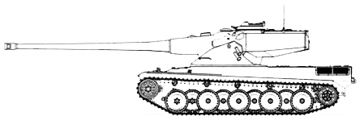

HOME
RECRUITMENT
ABOUT US
THE GULAG
OXIDE RECRUITMENT CONDITIONS

WN8 minimum of 1600
52% WR overall and recent 55% WR

3+ CW capable teir VIII and X tanks*
English skills and communication**
*This includes the following tanks: 113, Bat-Chat 25t, AMX 50B, Kranvagn, Object 907, MAUS.
**English skills and level of communication will be evaluated via our
Discord
Note that if you lack in a few areas but exceed our requirements in others we will still consider your application!
So for example if you have: 1.3k WN8 overall / 2.6k recent, or 1.1k overall / 2.8k recent, we will still take your application.